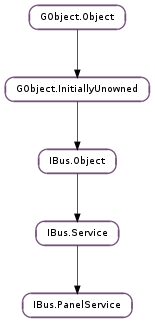

| static | new(connection) |
| candidate_clicked(index, button, state) | |
| cursor_down() | |
| cursor_up() | |
| page_down() | |
| page_up() | |
| property_activate(prop_name, prop_state) | |
| property_hide(prop_name) | |
| property_show(prop_name) |
None
| Name | Parameters | Return | Description |
|---|---|---|---|
| cursor-down-lookup-table | Emitted when the client application get the cursor-down-lookup-table. Implement the member function cursor_down_lookup_table() in extended class to receive this signal. Argument user_data is ignored in this function. | ||
| cursor-up-lookup-table | Emitted when the client application get the cursor-up-lookup-table. Implement the member function cursor_up_lookup_table() in extended class to receive this signal. Argument user_data is ignored in this function. | ||
| destroy-context | str | Emitted when the client application destroys. Implement the member function destroy_context() in extended class to receive this signal. Argument user_data is ignored in this function. | |
| focus-in | str | Emitted when the client application get the focus-in. Implement the member function focus_in() in extended class to receive this signal. Argument user_data is ignored in this function. | |
| focus-out | str | Emitted when the client application get the focus-out. Implement the member function focus_out() in extended class to receive this signal. Argument user_data is ignored in this function. | |
| hide-auxiliary-text | Emitted when the client application get the hide-auxiliary-text. Implement the member function hide_auxiliary_text() in extended class to receive this signal. Argument user_data is ignored in this function. | ||
| hide-language-bar | Emitted when the client application get the hide-language-bar. Implement the member function hide_language_bar() in extended class to receive this signal. Argument user_data is ignored in this function. | ||
| hide-lookup-table | Emitted when the client application get the hide-lookup-table. Implement the member function hide_lookup_table() in extended class to receive this signal. Argument user_data is ignored in this function. | ||
| hide-preedit-text | Emitted when the client application get the hide-preedit-text. Implement the member function hide_preedit_text() in extended class to receive this signal. Argument user_data is ignored in this function. | ||
| page-down-lookup-table | Emitted when the client application get the page-down-lookup-table. Implement the member function page_down_lookup_table() in extended class to receive this signal. Argument user_data is ignored in this function. | ||
| page-up-lookup-table | Emitted when the client application get the page-up-lookup-table. Implement the member function page_up_lookup_table() in extended class to receive this signal. Argument user_data is ignored in this function. | ||
| register-properties | IBus.PropList | Emitted when the client application get the register-properties. Implement the member function register_properties() in extended class to receive this signal. Argument user_data is ignored in this function. | |
| reset | Emitted when the client application get the reset. Implement the member function reset() in extended class to receive this signal. Argument user_data is ignored in this function. | ||
| set-cursor-location | int, int, int, int | Emitted when the client application get the set-cursor-location. Implement the member function set_cursor_location() in extended class to receive this signal. Argument user_data is ignored in this function. | |
| show-auxiliary-text | Emitted when the client application get the show-auxiliary-text. Implement the member function show_auxiliary_text() in extended class to receive this signal. Argument user_data is ignored in this function. | ||
| show-language-bar | Emitted when the client application get the show-language-bar. Implement the member function show_language_bar() in extended class to receive this signal. Argument user_data is ignored in this function. | ||
| show-lookup-table | Emitted when the client application get the show-lookup-table. Implement the member function show_lookup_table() in extended class to receive this signal. Argument user_data is ignored in this function. | ||
| show-preedit-text | Emitted when the client application get the show-preedit-text. Implement the member function show_preedit_text() in extended class to receive this signal. Argument user_data is ignored in this function. | ||
| start-setup | Emitted when the client application get the start-setup. Implement the member function start_setup() in extended class to receive this signal. Argument user_data is ignored in this function. | ||
| state-changed | Emitted when the client application get the state-changed. Implement the member function state_changed() in extended class to receive this signal. Argument user_data is ignored in this function. | ||
| update-auxiliary-text | IBus.Text, bool | Emitted when the client application get the update-auxiliary-text. Implement the member function update_auxiliary_text() in extended class to receive this signal. Argument user_data is ignored in this function. | |
| update-lookup-table | IBus.LookupTable, bool | Emitted when the client application get the update-lookup-table. Implement the member function update_lookup_table() in extended class to receive this signal. Argument user_data is ignored in this function. | |
| update-preedit-text | IBus.Text, int, bool | Emitted when the client application get the update-preedit-text. Implement the member function update_preedit_text() in extended class to receive this signal. Argument user_data is ignored in this function. | |
| update-property | IBus.Property | Emitted when the client application get the update-property. Implement the member function update_property() in extended class to receive this signal. Argument user_data is ignored in this function. |
| Name | Type | Access |
|---|---|---|
| parent | IBus.Service | r |
Bases: IBus.Service
An IBus.PanelService is a base class for UI services. Developers can “extend” this class for panel UI development.
| Parameters: | connection (Gio.DBusConnection) – An Gio.DBusConnection. |
|---|---|
| Returns: | A newly allocated IBus.PanelService. |
| Return type: | IBus.PanelService |
New an IBus.PanelService from an Gio.DBusConnection.
| Parameters: |
|---|
Notify that a candidate is clicked by sending a “CandidateClicked” to IBus service.
Notify that the cursor is down by sending a “CursorDown” to IBus service.
Notify that the cursor is up by sending a “CursorUp” to IBus service.
Notify that the page is down by sending a “PageDown” to IBus service.
Notify that the page is up by sending a “PageUp” to IBus service.
| Parameters: |
|---|
Notify that a property is active by sending a “PropertyActivate” message to IBus service.